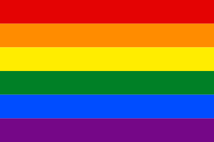
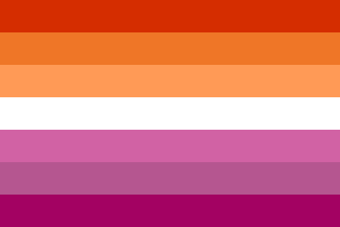
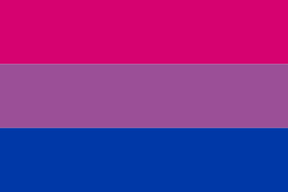
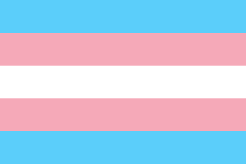
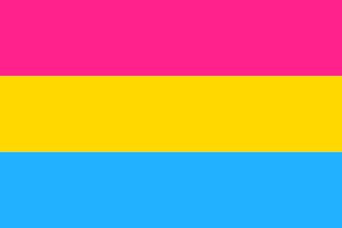
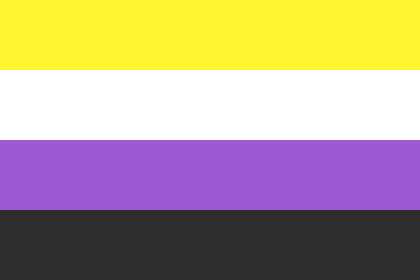
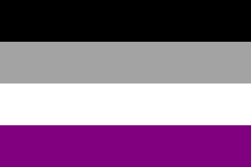
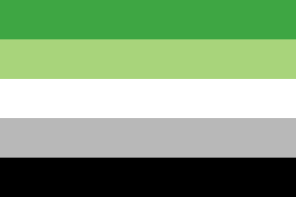
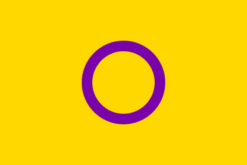
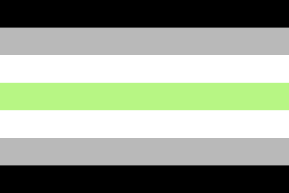

Orgulho LGBTQIA+
A sigla reúne diferentes orientações sexuais, identidades de gênero e características sexuais. Homossexualidade é sentir atração afetiva, romântica e/ou sexual por pessoas do mesmo gênero.
Um clube feito por e para nós
Um fã-clube fictício para celebrar mulheres lésbicas, criar laços e colecionar emblemas.
Conheça os emblemas
Um oi para quem está chegando ao SapaClub, CUIDADO É ALTO!
Cada etapa da sua jornada no clube desbloqueia um novo emblema.
O SapaClub nasceu da ideia de criar um espaço online onde mulheres lésbicas possam celebrar suas histórias, compartilhar interesses e criar vínculos com outras mulheres que se reconhecem nessa comunidade.
A proposta é acolher conversas respeitosas, apoiar a expressão de cada integrante e valorizar a cultura lésbica. Os emblemas representam o tempo e as memórias construídas junto ao clube.
Este projeto é fictício.Uma seleção de bandeiras LGBTQIAPN+. Cada uma representa histórias e identidades diversas; existem outras bandeiras e variações.

A sigla reúne diferentes orientações sexuais, identidades de gênero e características sexuais. Homossexualidade é sentir atração afetiva, romântica e/ou sexual por pessoas do mesmo gênero.

Mulher que sente atração afetiva, romântica e/ou sexual por outras mulheres. Algumas pessoas não binárias também usam essa identidade.

Pessoa que pode sentir atração por mais de um gênero. Essa atração não precisa ser igual ou acontecer da mesma forma.

Pessoa cuja identidade de gênero é diferente do gênero que lhe foi atribuído ao nascer. Ser trans não determina por quem a pessoa sente atração.

Pessoa que pode sentir atração afetiva, romântica e/ou sexual por pessoas de qualquer gênero. Isso não significa sentir atração por todas as pessoas.

Pessoa que não se identifica exclusivamente como homem ou mulher. Pode se identificar com mais de um gênero, com nenhum ou com uma identidade fluida.

Pessoa que sente pouca ou nenhuma atração sexual. Isso não determina se sente atração romântica ou deseja relacionamentos.

Pessoa que sente pouca ou nenhuma atração romântica. Isso é diferente da atração sexual, que pode variar de pessoa para pessoa.

Pessoa que nasce com características sexuais que variam das definições típicas de masculino ou feminino. Intersexo não é uma orientação sexual.

Pessoa que não se identifica com nenhum gênero ou sente que não tem gênero. Algumas pessoas agênero também se identificam como não binárias.
Destaque da comunidade
Um encontro fictício para celebrar experiências, trocar ideias e criar laços com outras mulheres lésbicas.
Seu interesse ainda não foi registrado.